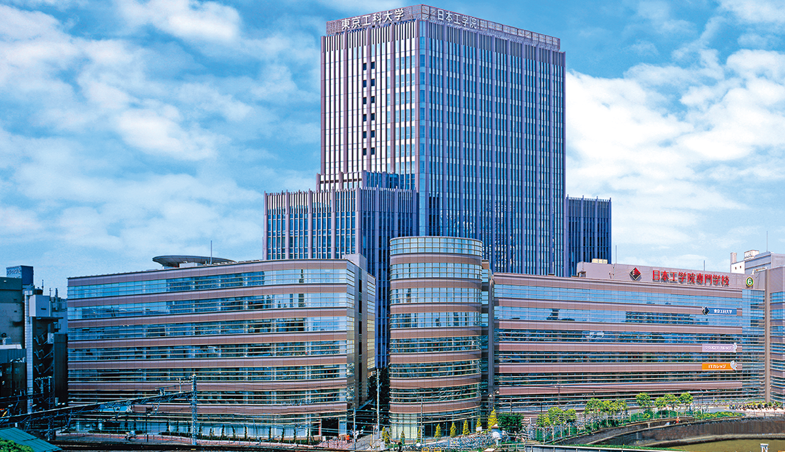
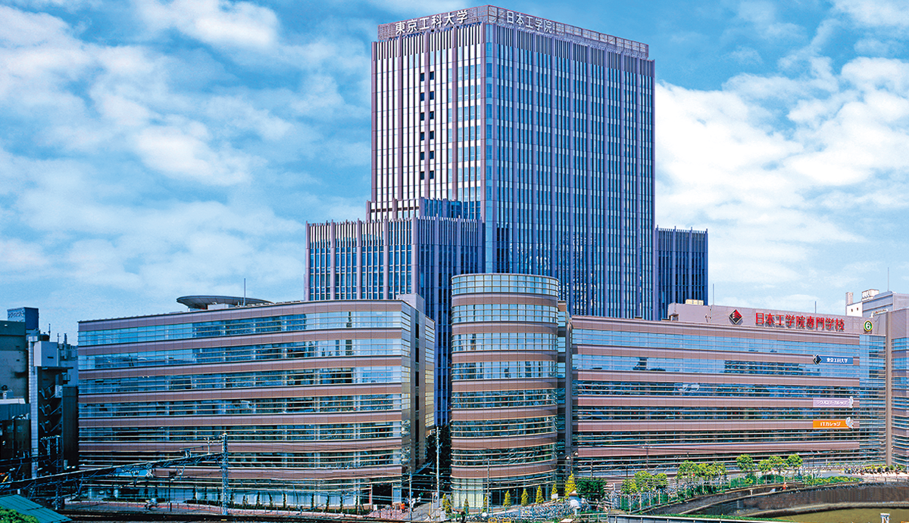

このサイトでは、私の通っている学校を紹介します。
3 号館のフロアガイド
私の所属する IT カレッジがある 3 号館のフロアガイドをみるには、 ここをクリックしてください。
★★★ 学内の私のお勧め 3 選 ★★★
- 12Fから見える風景
- 蒲田の景色を一望できます。
- 学食
- 種類豊富なので毎日おいしく食べられます。
- 蒲田ケバブ ステーション
- とても美味しいケバブ
作成者:K023C2019 ガイレサミル
このサイトでは、私の通っている学校を紹介します。
私の所属する IT カレッジがある 3 号館のフロアガイドをみるには、 ここをクリックしてください。
メッセージをお待ちしています。